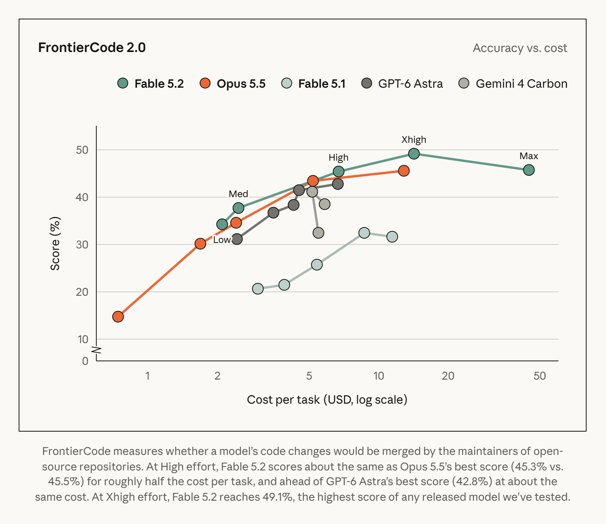
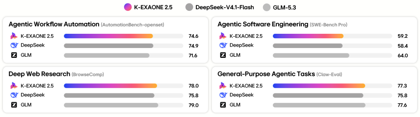
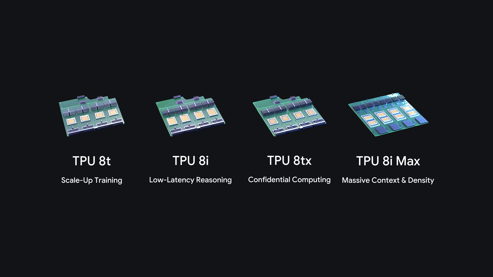
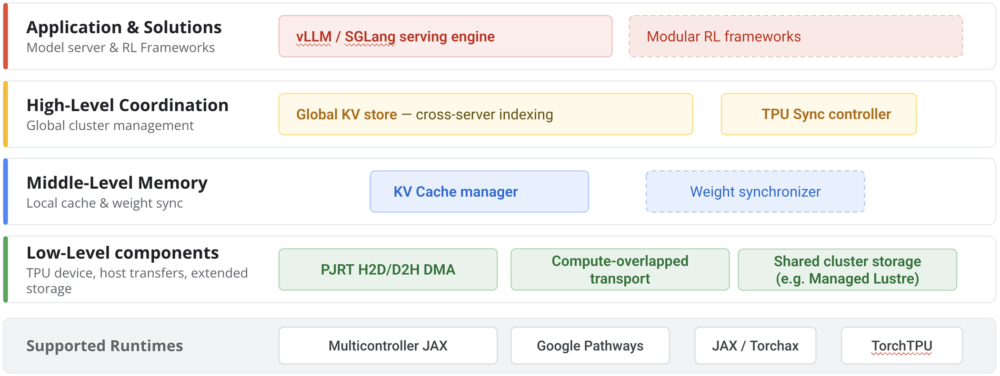

AI NEWS ISSUE 43
Claude Fable 5.2,성능 높이고 가격 낮췄다
Anthropic의 고난도 작업용 모델, LG K-엑사원 2.5 무료 API, Google의 새 TPU와 캐시 기술. 모델을 고르는 일에서 실행 비용을 줄이는 일까지 살펴봅니다.
AT A GLANCE
30초 요약
- Anthropic Fable 5.2·Mythos 5.2를 공개하고 토큰 단가를 낮췄습니다. 특정 코딩 평가에서는 추론 설정을 조절해 Opus 5.5와 비슷한 점수를 약 절반의 작업당 비용으로 얻었다고 발표했습니다.
- LG AI연구원 기술 검증 모델 K-엑사원 2.5의 API를 무료로 개방했습니다. 한국어 업무와 도구 호출을 시험할 기회가 늘었으며, 호출 제한과 결과 검증은 함께 살펴야 합니다.
- Google 기밀 컴퓨팅용 TPU 8tx, 긴 문맥용 TPU 8i Max를 발표했습니다. 별도 오픈소스 기술 TPU Sync는 추론 중간 상태를 옮기고 재사용해 반복 계산을 줄입니다.
자료 확인 2026년 11월 10일 한국시간 기준입니다. 주요 소식의 최초 발표일은 원문 표기상 11월 9일입니다. TPU 제품 소개는 Google 원문이 9일, Cloud 블로그 재게시본이 10일입니다. TPU Sync의 성능 시험은 2026년 7월 TPU v7x 환경에서 진행됐습니다.
01 / ANTHROPIC
어려운 코딩 작업을 겨냥한 Fable,
추론 설정에 따라 비용도 달라집니다
Anthropic이 Claude Fable 5.2와 Mythos 5.2를 출시했습니다. 두 제품은 같은 기반 모델을 쓰지만 접근 범위가 다릅니다. Fable은 사이버·생물학 분야의 안전장치를 적용해 일반 제공하고, Mythos의 직접 이용은 검증 프로그램을 통과한 조직에 엽니다. Fable의 API 식별자는 claude-fable-5-2입니다. 공식 발표 ↗
회사는 시험 버전의 에이전트 팀이 운영 서비스의 Python 코드를 Rust로 옮겨 서비스 시작 속도를 약 26배 높였다고 밝혔습니다. 또 다른 내부 실험에서는 1,000개가 넘는 하위 에이전트를 조정해 8일 동안 노트북에서 부팅되는 운영체제 시제품을 만들었다고 설명했습니다. 두 사례는 회사가 선정해 공개한 프로젝트 결과입니다.
최대 추론보다, 필요한 점수에 맞는 설정을 봅니다
자체 FrontierCode 2.0 평가에서 Fable 5.2는 Xhigh 설정으로 49.1%를 기록했습니다. 5.1의 같은 설정은 32.4%였습니다. 더 낮은 High에서는 45.3%로, Opus 5.5의 Max 결과 45.5%에 가까우면서 작업당 비용은 약 절반이었다는 설명입니다.

독립 평가기관 Vals AI의 11월 9일 결과도 함께 볼 만합니다. Fable 5.2는 Vals Index v2.2에서 71.31%, 36개 모델 중 1위였습니다. Vals가 밝힌 기본 추론 설정은 High입니다. 하지만 Tax Agent Bench에서는 84개 중 27위, Vals Legal Index에서는 37개 중 20위였습니다. 종합 점수는 금융·코딩·법률·세금 과제를 미국 GDP 비중으로 가중한 값이므로, 우리 업무의 우선순위와 같지는 않습니다. 분야별 결과 ↗ 지수 구성 ↗
이 순위는 대체 응답인 폴백을 일괄 실패 처리하지 않은 기본 표시입니다. 같은 페이지에서 폴백을 실패로 계산하는 옵션을 켜면 Vals Index는 69.48%, 36개 중 4위로 바뀝니다. 폴백 비율은 1.88%로 표시됩니다. 모델 선택 시에는 점수뿐 아니라 이런 응답 처리 조건도 함께 읽어야 합니다. 평가 옵션과 결과 ↗
| 모드 | 입력 100만 토큰 | 출력 100만 토큰 |
|---|---|---|
| 기본 | $8 | $40 |
| Fast | $16 | $80 |
회사는 기본 출력이 5.1보다 최대 30% 빠르고, Fast 모드는 토큰 생성을 최대 2.5배 빠르게 한다고 설명합니다. Fast의 단가는 두 배입니다. 도구 대기·테스트·재시도까지 포함한 완료 시간이 얼마나 줄어드는지는 별도 측정이 필요합니다. 일반적인 코딩·지식 업무에는 먼저 Opus 5.5를 쓰고 난도에 따라 모델을 바꾸라는 것이 Anthropic의 권장입니다. 가격·사용 권장 범위 ↗
02 / LG AI RESEARCH
K-엑사원 2.5 무료 API,
한국어 업무를 직접 비교할 기회입니다
LG AI연구원은 11월 9일 NVIDIA AI Day Seoul 2026에서 K-엑사원 2.5 API 무료 개방을 발표했습니다. 개발자·스타트업·기업·연구기관이 API 키를 발급받아 사용할 수 있습니다. 8월 공개 모델에 추가 학습을 적용한 기술 검증 모델이며, 3차수 모델은 별도로 개발 중입니다. LG 한국어 보도자료 ↗
공식 문서상 한국어·영어를 지원하는 텍스트 모델로, 전체 7,500억 개 중 약 310억 개의 파라미터가 활성화됩니다. 도구 호출·구조화된 출력·스트리밍을 지원하며, 입력 토큰과 최대 생성 토큰의 합은 524,288토큰 이하여야 합니다. 큰 문맥 창이 실제 문서 이해의 정확도까지 보장하지는 않으므로, 긴 안내서에서는 필요한 근거를 제대로 찾아내는지 함께 확인해야 합니다. 모델 소개 ↗

| 평가 | 점수 | 살펴보는 능력 |
|---|---|---|
| AutomationBench | 74.6 | 업무 도구 활용 공개 데이터셋 평가 |
| Claw-Eval | 77.3 | 에이전트 문제 해결 |
| BrowseComp | 78.0 | 웹 탐색·정보 검색 |
| SWE-Bench Pro | 59.2 | 소프트웨어 수정 |
LG는 24개 평가 지표를 종합한 내부 분석에서 8월 모델 대비 70% 이상 개선됐다고 설명했습니다. 위 표는 실제 기업 업무의 완료율이 아닙니다. 특히 모델 문서는 AutomationBench를 Open-set Evaluation으로 명시합니다. Anthropic이 발표한 동명 평가와 조건이 같다고 확인되지 않아 두 회사의 점수를 직접 비교하지 않았습니다.
연결 형식과 호출 제한을 함께 확인합니다
API는 OpenAI 호환 POST /v1/chat/completions 형식을 쓰고 모델명은 k-exaone_v2.5입니다. 기존 연동을 옮길 때는 URL뿐 아니라 추론 강도, 응답 필드, 도구 호출 방식도 점검하면 좋습니다. 한국어 API 문서 ↗
무료 API에도 초·분·일 단위 호출 제한이 있고, 초과하면 HTTP 429가 반환됩니다. 실제 한도는 응답 헤더에서 확인합니다. 문서의 예제 숫자를 모든 계정에 적용되는 보장 한도로 읽어서는 안 됩니다. 대기 시간을 알려주는 retry-after 헤더도 생략될 수 있습니다. 호출 제한과 재시도 안내 ↗
한국어 변경 요청에서 상품 속성이나 영향받는 기능을 추출하는 비교 실험에 후보로 넣을 수 있습니다. API 요금과 별도로, 잘못된 근거를 고치는 시간과 호출 제한 때문에 밀린 요청을 기록해야 채택 여부를 판단할 수 있습니다.
03 / GOOGLE TPU
같은 세대의 TPU를,
보안과 긴 문맥에 맞춰 나눴습니다
Google은 8세대 TPU 제품군에 TPU 8tx와 TPU 8i Max를 추가한다고 발표했습니다. 이번에는 기존 칩을 바탕으로 메모리·네트워크·보안을 구성한 두 시스템을 소개했습니다. Google 공식 발표 ↗

8tx · 실행 중인 데이터 보호
TPU 8t와 같은 실리콘에 AMD EPYC 호스트와 낮은 지연의 네트워크를 결합했습니다. 처리 중인 데이터와 모델 가중치까지 하드웨어 수준에서 격리하는 기밀 컴퓨팅에 초점을 맞췄습니다.
8i Max · 메모리 공급 확대
TPU 8i 칩 두 개를 한 패키지에 넣었습니다. Google에 따르면 8i 대비 연산 능력, SRAM, HBM 대역폭이 각각 두 배입니다. 긴 문맥을 처리할 때 필요한 데이터를 더 빨리 공급하려는 설계입니다.
업무를 설계하는 입장에서는 서로 다른 질문입니다. 민감한 문서를 다룬다면 처리 중 데이터 보호와 애플리케이션의 접근 권한을 함께 봐야 합니다. 긴 코드나 문서를 동시에 읽는다면 연산 성능뿐 아니라 메모리 병목을 봐야 합니다. 부품 사양 두 배를 업무 처리 속도 두 배로 환산할 수는 없습니다.
확인한 발표문에는 두 시스템의 일반 제공 날짜와 가격이 구체적으로 제시되지 않았습니다. 지금의 도입 예산을 산정할 때는 실제 공급 조건을 별도로 확인해야 합니다.
04 / GOOGLE TPU SYNC
이미 계산한 문맥을,
메모리 밖에서도 이어 씁니다
Google이 같은 날 소개한 오픈소스 라이브러리 TPU Sync는 추론 중간 상태를 여러 메모리 계층과 서버 사이로 옮깁니다. 모델이 앞선 토큰을 처리하며 만든 KV 캐시를 재사용하면, 긴 공통 지침이나 대화 맥락을 매번 처음부터 계산하는 부담을 줄일 수 있습니다. 기술 발표 ↗
TPU의 고속 메모리인 HBM, 서버의 DRAM, 저장장치를 계층으로 연결하고 데이터 이동과 연산을 겹쳐 실행합니다. vLLM·SGLang의 TPU 구성과 llm-d 등에 연결되며, 일부 저장장치 연동은 실험 단계입니다. 공식 저장소 ↗

| 측정 대상 | 발표한 변화 | 조건 |
|---|---|---|
| KV 전송 지연 | 90% 이상 감소 | Qwen3 235B 등의 전송 시험 |
| 첫 토큰 대기 TTFT | 평균 약 60% 감소 | 235B, 낮은 동시 요청 수 |
| 첫 토큰 대기 TTFT | 평균 약 90% 감소 | 480B, 낮은 동시 요청 수 |
시험 시점은 2026년 7월, 장비는 TPU v7x입니다. 새 8tx·8i Max의 측정치가 아니며, 첫 토큰 이후의 생성·도구 호출·검증까지 포함한 업무 완료 시간과도 구분해야 합니다.
TPU 추론 서버를 운영하지 않는 팀이라면 이 라이브러리를 곧바로 붙이기보다, 반복 계산이 어디서 생기는지 살펴보는 계기로 삼을 수 있습니다. 다만 KV 캐시의 성능 수치를 우리 앱의 답변 재사용 효과로 옮겨 쓸 수는 없습니다. 아래 실험은 완성된 분석 결과를 재사용하는 별도의 설계 제안입니다.
OUR VIEW
한 건을 제대로 끝내는 데
얼마가 드는지 봅니다
네 소식은 서로 다른 층을 다룹니다. Fable은 어려운 문제의 성능과 단가, K-엑사원은 시험할 수 있는 접근성, 새 TPU는 보안과 메모리, TPU Sync는 중간 계산의 재사용을 바꿉니다. 우리에게 필요한 것은 이 중 실제로 시간을 쓰는 구간을 찾는 일입니다.
예를 들어 API 변경 영향 분석 200건을 처리한다고 가정해 보겠습니다. 건당 입력 12,000토큰·청구 대상 출력 2,000토큰이면 Fable 기본 모드의 API 이용료는 $35.20입니다. 입력 240만 × $8/100만 + 출력 40만 × $40/100만으로 계산했습니다. 같은 양을 Fast로 처리하면 $70.40이며, 캐시·배치 할인, 추가 호출·도구 비용·세금은 제외한 가상 예시입니다. 공식 단가 ↗
사람이 200건을 각 1.5분씩 검토하고, 그중 20건을 각 4분씩 더 수정한다면 총 380분, 6시간 20분이 듭니다. 이 시간도 실측이 아닌 가정입니다. API 요금이 줄어도 잘못된 분석을 고치는 일이 늘면 전체 부담은 커질 수 있습니다.
완료 한 건당 비용을 비교할 때는 실패·재시도를 포함한 전체 비용을 검증된 완료 건수로 나눠야 합니다. 사람의 시간을 금액으로 바꾼다면 적용한 시간당 비용을 따로 밝히고, 실제 API 결제액과 구분합니다. Workless Engineering에서는 응답이 나온 순간보다, 다시 확인할 일이 줄어든 순간을 성과로 보려 합니다.
OUR LAB · 아직 실행하지 않은 실험 제안
매번 고성능 모델을 불러야 할까요?
같은 일을 세 방식으로 처리해 봅니다
확인하고 싶은 것은 하나입니다. 미리 정한 변경 유형에는 저비용 모델을 먼저 쓰고, 똑같은 요청에는 저장한 답을 돌려주면, 정확도를 유지하면서 비용과 기다리는 시간을 줄일 수 있을까요? 모델의 이름만 비교하지 않고, 모델을 부르는 방식을 바꿔 보는 실험입니다.
시킬 일은 “고쳐야 할 프로그램 찾기”입니다
가상 배송 API가 보내는 배송비 amount가 숫자 3000에서 문자열 "3000"으로 바뀌었다고 가정합니다. 이 API를 사용하는 프로그램이 두 개 있습니다. 정산 프로그램은 배송비를 숫자로 받아 합산하고, 배송 조회 프로그램은 송장 번호만 읽습니다.
- 01 · 입력 자료변경 전·후 API 안내서와 항목별 API 명세, 두 프로그램이 어떤 필드를 어떤 형식으로 쓰는지 적은 사용 명세를 줍니다.
- 02 · 요청“이번 변경 때문에 고쳐야 할 프로그램을 찾고, 안내서에서 근거를 짚어 줘.”
- 03 · 기대하는 답“정산 프로그램은 숫자 처리 방식을 점검·수정해야 합니다. 송장 번호만 쓰는 배송 조회 프로그램은 이번 변경의 영향이 없습니다.”
정산 프로그램을 빠뜨리거나 배송 조회 프로그램도 고쳐야 한다고 답하면 오답으로 셉니다. 답에 적힌 근거가 실제 안내서와 맞는지도 확인합니다.
A는 매번 호출하고, B는 규칙으로 고르고, C는 답을 재사용합니다
| 방식 | 처리 방법 |
|---|---|
| A · 매번 고성능 | 모든 요청을 같은 고성능 모델에 보냅니다. 같은 요청을 또 받아도 다시 호출합니다. |
| B · 규칙으로 모델 선택 | 아래 규칙에 따라 저비용 모델에 먼저 맡기거나, A와 같은 고성능 모델에 바로 맡깁니다. 반복 요청도 다시 호출합니다. |
| C · B에 답 저장 추가 | B처럼 모델을 고르되, 입력과 접근 권한이 같은 요청을 이미 처리했다면 저장한 답을 확인해 돌려줍니다. 이때는 모델을 부르지 않습니다. |
기준은 개발자가 정하고, 프로그램이 적용합니다
모델 선택 규칙은 실험을 준비하는 개발자가 미리 정합니다. 실행할 때는 프로그램이 변경 전·후 API 명세를 비교해 규칙에 맞는 모델을 부릅니다. 이를 위해 입력 명세에는 설명 문구, 자료형, 필수 여부, 허용값을 각각 나눠 적습니다. 별도의 AI 분류 모델을 호출하지 않으므로, 이 비교에 드는 시간과 처리 비용만 함께 기록합니다.
| 프로그램이 확인한 변경 | 선택할 모델 |
|---|---|
| 한 API의 설명 문구만 변경 | 자료형·필수 여부·허용값 등 다른 항목은 그대로임을 확인하면 저비용 모델에 먼저 맡깁니다. |
| 자료형·필수 여부·허용값 변경, 여러 API 변경 | 고성능 모델에 바로 맡깁니다. 자료형 등과 설명 문구가 함께 바뀌었거나, 여러 API의 설명만 바뀐 경우에도 이 규칙이 우선합니다. |
| 그 밖의 변경 또는 분류 불가 | 정해 둔 항목으로 분류되지 않거나 명세를 비교하지 못하면 고성능 모델에 바로 맡깁니다. |
이 구분은 실제 난도를 알아낸 결과가 아니라 저비용 모델에 먼저 맡겨 볼 범위를 정한 규칙입니다. 설명 문구만 바뀌어도 중요한 업무 조건이 달라질 수 있습니다. 따라서 “이 규칙으로 나눠 보내도 전부 고성능 모델에 맡길 때만큼 정확한가?”를 실험으로 확인합니다. 저비용 모델의 답이 자동 검사에 실패하면 고성능 모델로 한 번 재시도하며, 검사에서 놓친 오답은 실행 후 정답지와 비교해 셉니다.
위의 숫자→문자열 변경을 처음 받으면 A·B·C 모두 고성능 모델을 부릅니다. 그 요청을 똑같이 한 번 더 받으면 A와 B는 다시 모델을 부르고, C는 앞서 저장한 답을 확인해 돌려줄 수 있습니다. 저장한 답을 확인하는 데는 시간이 들지만, 이때는 모델을 부르지 않습니다.
반면 한 API의 설명 문구만 바뀐 요청에서는 A는 고성능, B와 C는 저비용 모델을 먼저 씁니다. 이렇게 A와 B를 비교하면 ‘모델을 골라 쓴 효과’, B와 C를 비교하면 ‘답을 다시 쓴 효과’를 나눠 볼 수 있습니다. 저비용 경로의 후보로는 K-엑사원을 시험할 수 있습니다.
저장한 답을 무조건 다시 쓰지는 않습니다
질문이 같아도 안내서가 v1에서 v2로 바뀌었다면 이전 답을 쓰지 않고 다시 분석합니다. 읽기 권한이 사라졌다면 저장된 답도 보여주지 않습니다. 여기서 캐시는 이렇게 다시 쓸 수 있도록 답을 저장해 둔 곳을 뜻합니다.
또한 ‘답을 반환했다’와 ‘정답이다’를 구분합니다. 코드는 출력 형식과 인용한 근거의 존재를 검사할 수 있지만, 정산 프로그램을 빠뜨렸는지까지 보장하지는 못합니다. 맞는 답인지는 실행 뒤에 미리 만든 정답지와 비교합니다. 정답지는 모델에게 보여주지 않습니다. C가 잘못된 답을 저장해 반복해서 돌려주는지도 함께 확인합니다.
- 접수
- 경로 확인
- 처리·검증
- 최종 상태
| 상황 | 기대 동작 | 이번 요청의 모델 호출 |
|---|---|---|
| 동일 요청 | 권한·버전·근거 존재 확인 후 반환 | 0회 |
| 문서 v2 | v1 캐시 제외, 새 분석 자동 검사 후 반환·저장 | 1회 |
| 권한 회수 | 캐시 내용도 반환하지 않고 거절 | 0회 |
| 두 번 검사 실패 | 보류, 캐시 저장 안 함 | 2회 |
정답은 유지하고, 비용이나 시간을 줄여야 합니다
같은 요청들을 A·B·C에 보내고 정답 수, API 비용, 응답을 기다린 시간, 사람이 고친 시간을 비교합니다. B가 A보다 싸더라도 틀린 답이 늘면 채택하지 않습니다. C도 B의 정답 수를 유지하면서 비용이나 시간을 더 줄여야 합니다. 오래된 답이나 권한 없는 내용을 보여주면 재사용 설계를 고칩니다.
필드 이름과 자료형을 대조하는 일은 코드만으로 해결될 수도 있습니다. 같은 입력을 규칙만으로 처리한 결과도 남겨, 모델을 붙여야 할 이유가 있는지 먼저 봅니다. 이 실험은 API 변경 영향 분석을 처리하는 방법을 비교하는 제안입니다. TPU Sync의 내부 캐시 성능을 재현하거나 실제 코드 수정을 평가하는 실험은 아닙니다.
직접 해 볼 때의 세부 조건
비교할 요청과 실행 순서
한 API의 설명 문구만 바뀐 요청 15건, 자료형·필수 여부·허용값 등이 바뀌거나 여러 API가 함께 바뀐 요청 15건, 앞선 요청을 다시 쓰는 15건으로 총 45건을 만듭니다. 마지막 15건은 완전 동일 5건, 문서 변경 5건, 접근 범위 변경 5건입니다. 접근 범위가 바뀐 사례도 현재 읽기가 허용되는 자료를 사용합니다. 각 반복은 원본 뒤에 배치하고, 완전 동일 5건 외에는 캐시 키가 겹치지 않게 만듭니다. C의 캐시 적중은 회차당 최대 5건, 전체의 11.1%이며 앞선 답이 보류됐다면 더 줄어듭니다.
조정에는 별도 문서군을 쓰고 최종 45건은 고정합니다. 각 구성을 세 번 실행하며, 구성 순서는 A→B→C, B→C→A, C→A→B로 바꿉니다. 구성 안의 요청 순서와 동시 요청 수 1은 같습니다. C는 매 회차 빈 캐시에서 시작하고, 의도한 반복 외에 대화 상태는 공유하지 않습니다. 같은 45건의 반복 측정을 135개의 독립 사례로 해석하지 않습니다.
모델 선택과 답 저장 규칙
개발자가 본문의 선택 규칙을 실험 전에 코드로 정하고, 프로그램이 변경 전·후 항목별 API 명세를 비교해 적용합니다. 한 API의 설명 문구만 바뀌었음을 확인한 경우에만 저비용 모델을 먼저 쓰며, 그 밖의 변경이나 분류 불가는 고성능 모델로 보냅니다. A·B·C의 고성능 모델과 추론 설정·공통 지침·출력 형식·자동 검사·재시도 규칙은 고정합니다. 공급자의 프롬프트 캐시 설정도 같은 모델끼리 맞추고 할인 토큰을 별도 기록합니다.
캐시를 찾는 기준인 키에는 요청 내용, 안내서와 프로그램 사용 명세의 해시, 접근 범위, 모델·추론 설정·지침·검사기·경로 선택 규칙 버전을 넣습니다. 접근 권한을 먼저 확인하며, 의미가 비슷하다는 이유만으로 다른 요청의 답을 쓰지는 않습니다. 자동 검사를 통과한 답만 C에서 저장하고, 재사용할 때도 근거 구절과 참조한 프로그램이 현재 입력에 있는지 검사합니다. 사후 채점용 정답지는 모델 입력·경로 선택·재시도·저장 판단에 사용하지 않습니다.
실패 처리와 채점
형식 오류나 근거 누락은 고성능 모델로 한 번만 재시도하고, 다시 실패하면 보류·미저장합니다. 최초 호출이 고성능 모델이어도 같습니다. HTTP 429·시간 초과는 정해진 대기 후 같은 모델로 재요청하며, 대기 헤더가 없으면 미리 정한 대기 시간을 씁니다. 모든 오류를 합쳐 추가 호출은 요청당 한 번까지만 허용합니다.
정답·오답·보류의 합계는 구성별·회차별 45건입니다. 변경 종류·영향받는 프로그램·근거가 모두 맞아야 정답이며, 빠뜨리거나 잘못 추가한 대상이 있으면 오답입니다. 사람이 수정하기 전 답을 채점하고, 보류는 정답으로 세지 않습니다. 강제로 넣는 권한 거절·429·시간 초과 검사는 별도 묶음으로 진행하되, 본 평가 중 실제 발생한 오류와 비용은 45건 기록에서 빼지 않습니다.
비용·시간과 채택 기준
실행 시간은 접수부터 반환 또는 보류까지로 정하고 모델 호출·재시도·캐시 조회·자동 검사·대기를 포함합니다. 실제 청구 토큰과 API 비용, 같은 기준으로 사람이 검토·수정한 시간은 각각 기록합니다. 정답지 준비와 사후 채점에 드는 시간은 운영 검토 시간과 나눕니다. 자동 정답 한 건당 시스템 비용은 실패를 포함한 전체 시스템 비용을 수정 전 정답 수로 나누며, 정답이 0건이면 계산하지 않습니다.
세 회차 모두 B의 정답 수가 A보다 줄지 않고 C도 B보다 줄지 않아야 합니다. 실행 전에 목표 지표를 정하고 비용·응답 시간·사람의 검토 부담을 함께 봅니다. 정답이 없거나 목표 지표가 개선되지 않으면 도입을 보류합니다. 오래된 답이나 권한 없는 내용이 한 건이라도 반환되면 재사용 설계를 보류합니다. 소규모 시험만으로 운영 신뢰도를 확정하지 않습니다.
합성 입력과 정답지, 모델·설정표, 규칙, 요청별 실행 기록, 비교 보고서를 남깁니다. 규칙만 사용하는 기준에도 같은 입력과 채점 기준을 적용합니다.
읽은 자료
- Anthropic · Claude Fable 5.2 and Mythos 5.2 11월 9일 · 출시·단가·추론 설정별 자체 평가와 선정 사례
- Vals AI · Fable 5.2 분야별 평가 11월 9일 결과 · 종합 순위와 세금·법률 평가의 차이
- Vals Index v2.2 · 구성과 순위 금융·코딩·법률·세금 과제를 미국 GDP 비중으로 가중
- LG · ‘K-엑사원 2.5’ API 무료 개방 11월 9일 · 기술 검증 모델, 자체 평가, 무료 제공 발표
- EXAONE · 한국어 모델 소개 지원 기능·문맥 길이·AutomationBench 공개 데이터셋 평가
- EXAONE · API 요청·응답 문서 모델 ID와 입력·최대 생성 토큰 합계 제한
- EXAONE · 호출 제한 429 응답과 헤더, 재시도 대기 정보의 생략 가능성
- Google · TPU 8tx와 TPU 8i Max 최초 발표 11월 9일 · 새 시스템 구성
- Google Cloud · TPU 제품 소개 재게시 11월 10일 · 본문에서 인용한 제품 이미지와 구성 설명
- Google · TPU Sync 기술 발표 11월 9일 · 구조도, 7월 TPU v7x 내부 시험과 측정 조건
- Google · TPU Sync 공식 저장소 오픈소스 구현과 사용 문서
공식 그래프와 제품·구조 이미지는 제공자의 자료입니다. 실험 흐름과 단계별 재생은 헬로우 휴먼의 설계 제안이며, 모델·API·TPU를 직접 실행해 평가한 결과는 아닙니다.